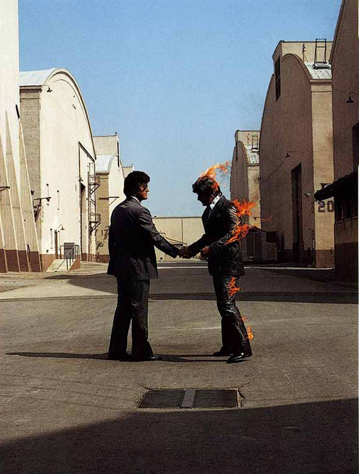

Moved to Georgia in 2012. First lived on base then moved to Martinez and then downtown Augusta. I really like the community here and try to get involved. I attended a few community meetings and have done some volunteer work around the city.
Married my wife Molly about 2.5 years ago. We met in central California. After almost a year of long distance she moved to Georgia. We got married pretty soon after in Riverside California. She is a graduate Research Assistant/Neuroscience PhD student at Medical College of Georgia.
I play guitar. I mostly play acoustic because I think electric guitars take too much effort to make them sound good. When I was a kid my grandma had a guitar and I would rest my head on the wood and pluck one string at a time. The resulting vibrations would massage my brain, and that is probably where I found my passion for music.
Molly and I love to watch TV shows. We watch all kinds of TV shows crimes, dramas, comedies. We try and watch at least one episode of something a night as kind of a family activity. We also watch movies when we have the time.
I play video games to destress. I would call myself a casual gamer. I like to buy games that have been out for a while so I can get them cheap. I also mostly play single player games because I like admiring game design. This manifests in me just staring at grass for minutes at a time. Oh, and something that frustrates me to no end is people who talk over story and dialogue. Lesson learned, I don't play well in parties on the first run through of a game.
One day I would love to become a software/hardware developer. I think computers are the bees knees. It is insane the power they have. I am still very new to my understanding of everything that computers can do. I love programming. I think it is the best way to communicate ideas. This world that we live in has such amorphous borders and social rules that can be confusing at times. But programming, with its straight forward syntax, empowers me to create whatever I want. The dark side of my interest in computers is that I have begun the pilgramage of learning about privacy and how little we have because of the internet. I have been working to post less online and use online privacy tools to assist in this venture. There has to be a balance between sharing on the internet and witholding personal information. I am still learning this balance. But from an offline standpoint I think building, and through that creation, makes the world a better place.